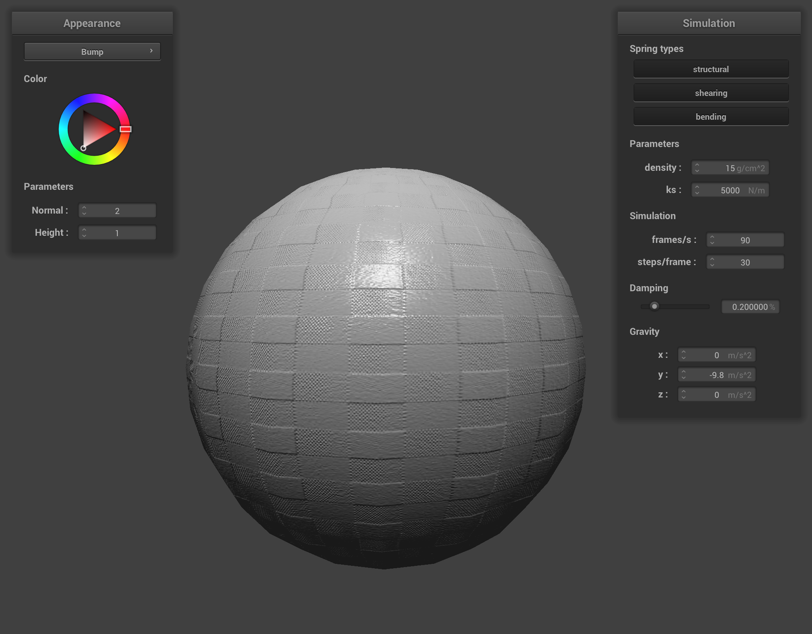

Overview
This assignment was about implementing a simulator that simulates behavior of a cloth by modeling the cloth as a collection of point masses connected with strings. We also learned about how GPU shaders can achieve various visual effects with relatively simple operations, even without doing path tracing like in the previous assignments.
Part I: Masses and springs
Take some screenshots of scene/pinned2.json from a viewing angle where you can clearly see the cloth wireframe to show the structure of your point masses and springs.
Image is shown below. We can see that all point masses and springs are correctly laid out with no missing points/connections.
Show us what the wireframe looks like (1) without any shearing constraints, (2) with only shearing constraints, and (3) with all constraints.
scene/pinned2.json
with (1) no shear, (2) only shear, (2) all springs enabled.
Part II: Simulation via numerical integration
Experiment with some the parameters in the simulation. To do so, pause the simulation at the start with P, modify the values of interest, and then resume by pressing P again. You can also restart the simulation at any time from the cloth's starting position by pressing R.
Describe the effects of changing the spring constant ks; how does the cloth behave from start to rest with a very low ks? A high ks?
With low ks, the cloth is modelled as very "flexible", because the springs exhibit less force and only loosely couple the point masses. This shows up as the cloth hanging lower than high ks in its resting position, as in the screenshots below. Even with very low ks, the low hanging effect is limited by the 10% string length constraint that we implemented.
scene/pinned2.json
with ks=1 and ks=50000.
What about for density?
Higher density means the cloth is heavier. This is exhibited as the cloth hanging lower at its resting position with higher density. This is because the springs have to stand heavier downward force to support the cloth, therefore being further lengthened than with lower density.
scene/pinned2.json
with density=1, 15, 5000.
What about for damping?
High damping means the velocity of the points get decayed faster in time. This means that with low damping, the initial flapping of the cloth does not slow down quickly as the time passes, resulting in the cloth even flapping backwards due to inertia like shown in the picture on the left. With high damping, the cloth slowly comes to the rest with a longer time.
scene/pinned2.json
with damping=0% and 1%.
Show us a screenshot of your shaded cloth from scene/pinned4.json in its final resting state! If you choose to use different parameters than the default ones, please list them.
We can see the symmetric wrinkle on the four corners formed by the increased tension supporting the weight of the cloth. All default parameters are used.
scene/pinned4.json at its resting position.
Part III: Handling collisions with other objects
Show us screenshots of your shaded cloth from scene/sphere.json in its final resting state on the sphere using the default ks = 5000 as well as with ks = 500 and ks = 50000. Describe the differences in the results.
Like in Part 2, higher ks means the cloth is "stiffer", because the springs exhibit stronger restoring forces with the same displacement. This means they can support the weight of the drapped part of the cloth with less deforming. This shows up as the cloth looking less deformed, i.e. spanning wider to the side, with high ks.
scene/sphere.json with ks=500, 5000, 50000.
Show us a screenshot of your shaded cloth lying peacefully at rest on the plane. If you haven't by now, feel free to express your colorful creativity with the cloth! (You will need to complete the shaders portion first to show custom colors.)
We can see that the cloth is resting completely still on the plane, and there is no artifact that shows the cloth through the back side of the plane.
scene/plane.json from upside and below.
Part IV: Handling self-collisions
Show us at least 3 screenshots that document how your cloth falls and folds on itself, starting with an early, initial self-collision and ending with the cloth at a more restful state (even if it is still slightly bouncy on the ground).
We can see that the cloth does not clip through itself, and comes to a restful position after slowly unfolding and spreading itself out on the plane.
scene/selfCollision.json at different time.
Vary the density as well as ks and describe with words and screenshots how they affect the behavior of the cloth as it falls on itself.
High density means the cloth is heavier, and that the points need stronger force to be displaced and moved to a more natural, less bent position. Therefore, the cloth does not unfold easily to a flatter state with higher ks, resulting in a more "wrinkled" look. With lower ks, however, the cloth deforms easily with the same spring forces, therefore unbending itself quickly onto the plane.
scene/selfCollision.json with low density (1).
scene/selfCollision.json with high density (150).
ks is kind of opposite to density. Higher ks means the strings can put stronger force with the same deformation, and therefore the cloth doesn't have to deform as much to provide enough force to prevent self-collision. This results in less bending and wrinkles with high ks.
scene/selfCollision.json with lower ks (500).

|
scene/selfCollision.json with higher ks (50000).
Part V: Shaders
Explain in your own words what is a shader program and how vertex and fragment shaders work together to create lighting and material effects.
Shaders are programs run on the GPU that are run in massively parallel fashion, e.g. for each vertex or pixel, that achieves certain post-processing effects on its input data to form the output data. It can be ordinarilly used to "shade" pixels, i.e. assign colors to each of the pixel, but it can also be used to achieve more sophisticated effects such as displacing some of the vertex positions, or modeling lighting/material effects.
Vertex shaders usually compute per-vertex data such as their positions, normals, and u-v values. These per-vertex data then gets interpolated using barycentric coordinates, and then are fed to the fragment shaders. Because each fragment have access to their own position, light positions, camera positions, etc, they can perform per-fragment vector operations to model light rays reaching/shooting from their fragment positions and achieve certain lighting effects.
Explain the Blinn-Phong shading model in your own words. Show a screenshot of your Blinn-Phong shader outputting only the ambient component, a screen shot only outputting the diffuse component, a screen shot only outputting the specular component, and one using the entire Blinn-Phong model.
Blinn-phong shading model improves upon diffuse shading model by introducing
the specular lighting term. The specular lighting takes into account
not just the position of the lights (l), but also the position of the
camera (v),
so that it can model bright reflection lights when the camera position
aligns with the light position in such a way that the camera ray reaches the
light source through a direct specular reflection.
scene/sphere.json
with ambient, diffuse, specular and entire component of the Blinn-Phong
shading.
Show a screenshot of your texture mapping shader using your own custom texture by modifying the textures in /textures/.
scene/sphere.json with texture shader using my own texture, which
is my graduation photo :)
Show a screenshot of bump mapping on the cloth and on the sphere. Show a screenshot of displacement mapping on the sphere. Use the same texture for both renders. You can either provide your own texture or use one of the ones in the textures directory, BUT choose one that's not the default texture_2.png. Compare the two approaches and resulting renders in your own words. Compare how your the two shaders react to the sphere by changing the sphere mesh's coarseness by using -o 16 -a 16 and then -o 128 -a 128.
Bump mapping of the cloth and the sphere, rendered with
texture-4.png:
scene/sphere.json Bump mapping with Normal=2, Height=1
With bump mapping, different mesh coarseness do not show much difference in the render, aside from the geometry of the sphere looking a little more jagged. This is because thanks to interpolation of the normals, the per-fragment displaced normals do not change much even with fewer number of vertices, and therefore the lighting is similar.
|  |
scene/sphere.json Bump mapping with -a16 and -a128
Displacement mapping of the cloth and the sphere, rendered with
texture-4.png.
This looks different from bump mapping because we are now actually
changing the positions of the vertices. The geometry actually
looks bumpier than the bump mapping. However, it does not
always look more realistic, because the vertices in the geometry
can be too coarse compared to the pattern of the texture.
scene/sphere.json Displacement mapping.
This problem of too coarse vertices can be fixed by increasing
fineness of the mesh: with -a128, the displacement
of the vertices look actually aligned with the pattern
on the texture, resulting in realistic bumpy feeling.
scene/sphere.json Displacement mapping with -a16 and -a128.
Show a screenshot of your mirror shader on the cloth and on the sphere.
It renders correctly!
scene/sphere.json Mirror shading.